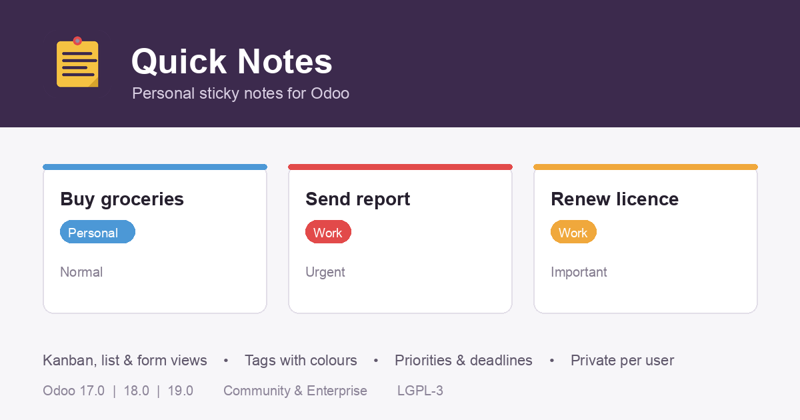

Personal sticky notes for Odoo
Keep short reminders where you already work. Every user gets a private notebook inside Odoo — add tags, set a priority and a deadline, and pin the notes that matter most.

Three ways to look at your notesA kanban board grouped by priority, a sortable list with inline editing, and a full form view. |
Tags with coloursGroup notes by topic. Each tag carries its own colour so the board stays readable at a glance. |
PrioritiesMark a note as Normal, Important or Urgent and let the kanban board organise itself. |
Deadlines and overdue alertsGive a note a deadline. Once the date has passed the note is highlighted in red automatically. |
Private by defaultA record rule keeps your notes visible only to you. An administrator group can review every note when needed. |
Archive, never loseFinished notes can be archived instead of deleted, and brought back whenever you need them. |
| Supported versions | Odoo 17.0, 18.0 and 19.0 |
| Editions | Community and Enterprise |
| Dependencies | Odoo base only — no other module required |
| Licence | LGPL-3 |
| Data privacy | This module stores all data in your own Odoo database. It does not send any information to an external service. |
Questions or a bug to report? Write to ferhatmuhamad221@gmail.com